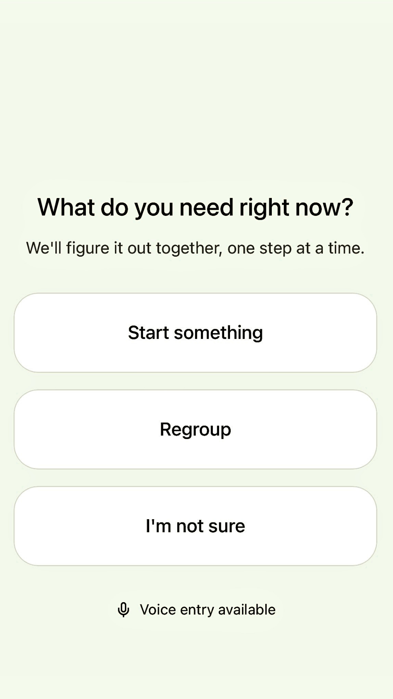
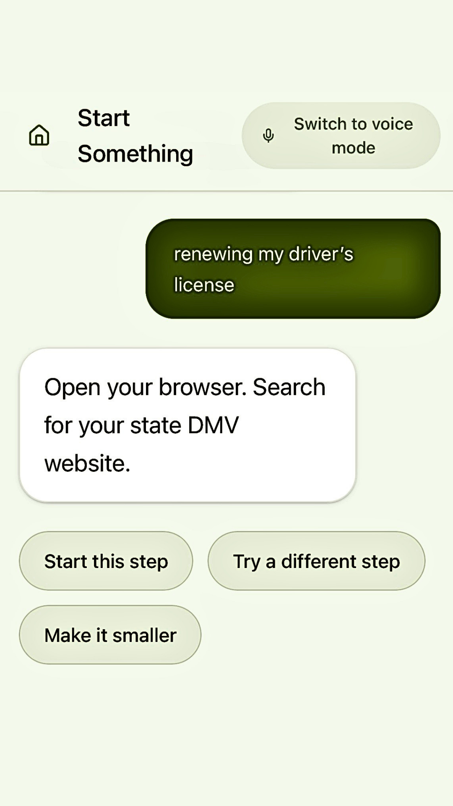
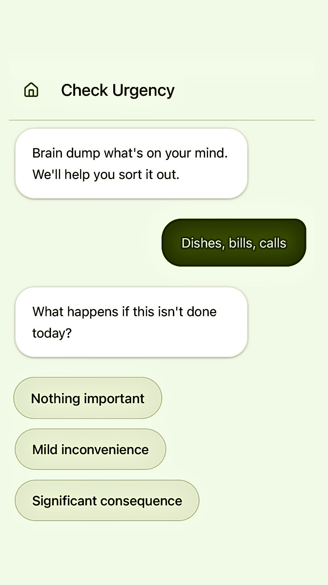
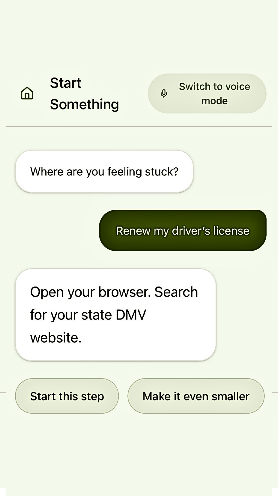
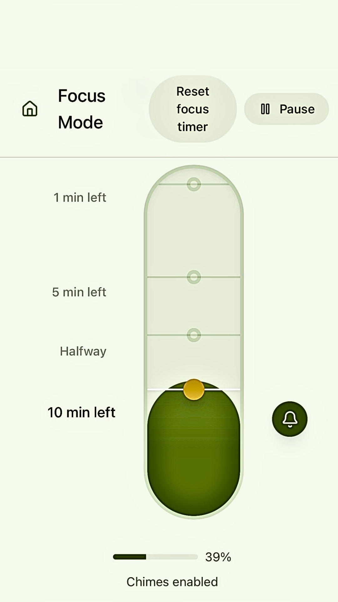
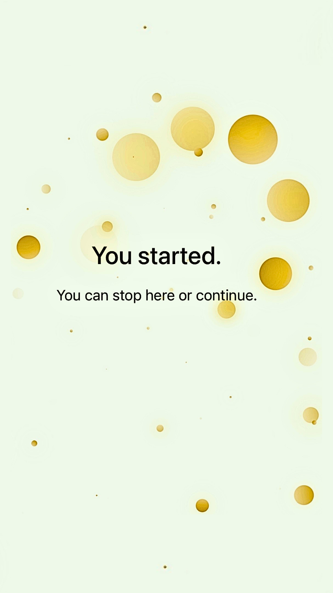

Low-demand entry
Limits initial choices so the system does not reproduce the overload it is meant to reduce.
How might a support system reduce task-initiation friction without adding pressure, surveillance, or loss of agency?
An exploratory UX research and systems-design project focused on executive dysfunction, cognitive overload, and consent-based support.
Many productivity tools assume users can already define the task, sequence it, prioritize it, tolerate reminders, and recover from interruption. Interviews suggested those assumptions can fail precisely when support is most needed.
Scaffold shifted from an early automation concept toward a narrower question: what kinds of support reduce ambiguity and activation cost while preserving autonomy?
Participants were adults who self-identified with experiences involving ADHD, autism, executive dysfunction, burnout, chronic overwhelm, depression, fluctuating functional capacity, or difficulty with task initiation and sequencing.
Selection was based on lived experience rather than diagnosis alone.
Sessions explored task initiation, overwhelm, existing tools, emotional dynamics, environmental conditions, and forms of support that helped or harmed.
Read the interview guide →The original case study used a composite persona named Alex. In this revision, that synthesis is presented as a research-pattern model. With five exploratory interviews, recurring conditions are more defensible evidence than a stable representative archetype.
Tasks without a clear starting point were described as disproportionately difficult.
Ambiguity can increase the translation work required between intention and action.
Surface the next actionable step before exposing the full task structure.
Pressure-oriented tools, reminders, and accumulated tasks often intensified shame or shutdown.
Support can become another demand when it frames delay as failure.
Avoid urgency loops, streaks, escalating reminders, and punitive language.
Capacity changed with stress, sensory input, emotional load, health, and accumulated demands.
Task difficulty is contextual rather than fixed.
Keep interactions small, bounded, interruptible, and easy to refuse.
Participants described support as aversive when they felt managed, monitored, or controlled.
Agency is part of the usability problem, not an ethical add-on.
Require explicit approval, visible exits, reversibility, and “not now” pathways.
Prototype flows concentrated on three moments: finding a first step, calibrating urgency, and creating a bounded focus interval. The research value is in the relationship between each screen and the condition it was intended to address.

Limits initial choices so the system does not reproduce the overload it is meant to reduce.

Translates a large task into a bounded action without requiring the user to sequence everything first.

Separates felt urgency from actual consequence before the system recommends action.

Offers a lower-activation version of the task when the current step still feels inaccessible.

Creates a visible stopping point rather than asking for open-ended productivity.

Marks the end of the interaction without a streak, score, or escalation into another task.
Users appeared cautious when a flow implied hidden complexity. The response was to make pause and exit paths more explicit.
Participants responded more positively when tasks became finite, single-step actions.
Language communicating flexibility and non-judgment increased willingness to continue.
The system was intentionally framed as support rather than productivity optimization. Its operating principles prioritize explicit approval, transparency, bounded scope, reversibility, and the ability to disengage without penalty.
No action is taken without explicit approval. No streaks, guilt framing, escalating reminders, pooled behavioral profiles, or hidden expansion of scope.
Read the constraint set →The most important outcome was not a feature. It was a reframing: the problem became less about getting users to comply with a plan and more about reducing the translation burden between intention and executable action.
If continued, the next research phase would include broader participatory research, accessibility testing, privacy review, occupational-therapy consultation, and longitudinal evaluation of when assistance becomes pressure.